Punto de venta, inventario, clientes y análisis de ganancias en un solo sistema. Precios en dólares, cobros en bolívares y divisas, con IVA e IGTF calculados solos.
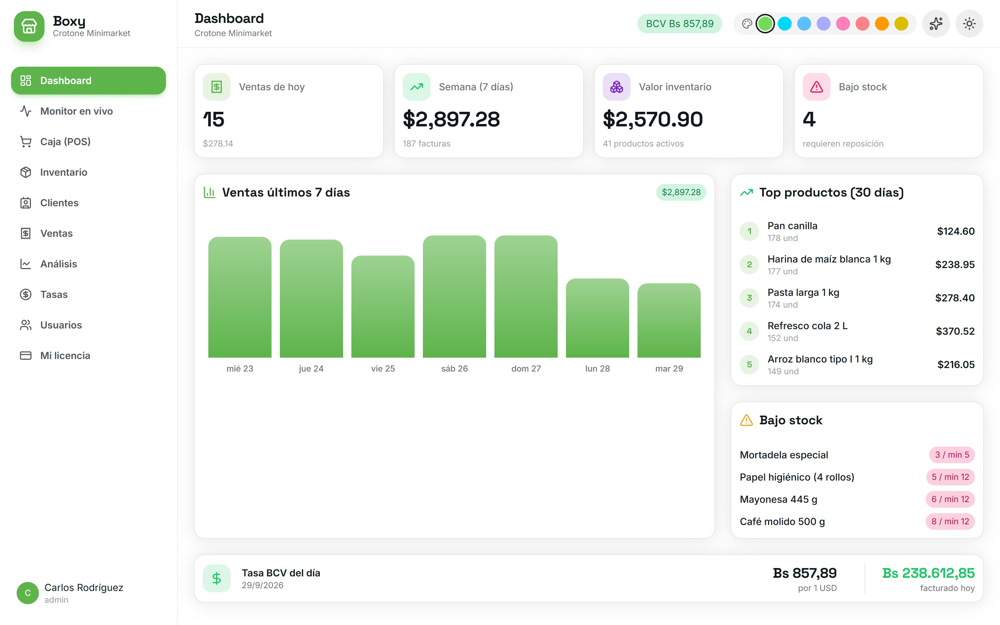
Los precios se piensan en dólares, se cobran en bolívares, pago móvil, efectivo y Zelle, y la tasa cambia todos los días. Boxy está hecho para esa realidad, no adaptado de un sistema extranjero.
Cargas el precio en dólares y la caja muestra el total en bolívares a la tasa BCV del día, que se actualiza sola dos veces al día.
Efectivo en Bs o dólares, pago móvil, transferencia, punto de venta y Zelle, incluso combinados en una misma venta. El IGTF del 3 % se calcula solo.
Cada venta descuenta el stock y deja rastro en el kardex. Sabes qué tienes, cuánto vale y qué está por agotarse.
Qué se vende más, cuánto ganas por producto, qué reponer y qué combos armar. Sin hojas de cálculo.
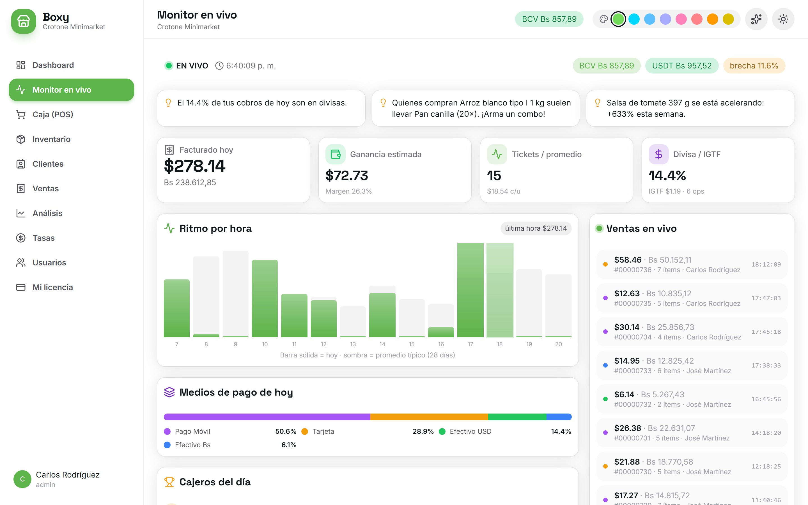
Venta rápida con buscador, lector de códigos y los más vendidos a un toque.
El celular del cajero se convierte en lector de códigos de barras.
Imprime etiquetas con código de barras y precio para tus productos.
Con equivalente en bolívares, sin salir de la caja.
Entradas, salidas, ajustes y el historial completo de cada producto.
Carga cientos de productos con precio, costo, categoría y stock de una vez.
Registro con cédula o RIF, teléfono y correo, asignables en cada venta.
Historial numerado de ventas, en dólares y bolívares, con comprobante en PDF.
Ventas del día y de la semana, valor del inventario y alertas.
Cada venta al instante, ritmo por hora, medios de pago y cajeros.
Margen y ganancia real de cada producto en los últimos 30 días.
BCV y USDT automáticas, otras monedas a mano. Usuarios por rol.
Menos clics por venta y cero cuentas a mano.
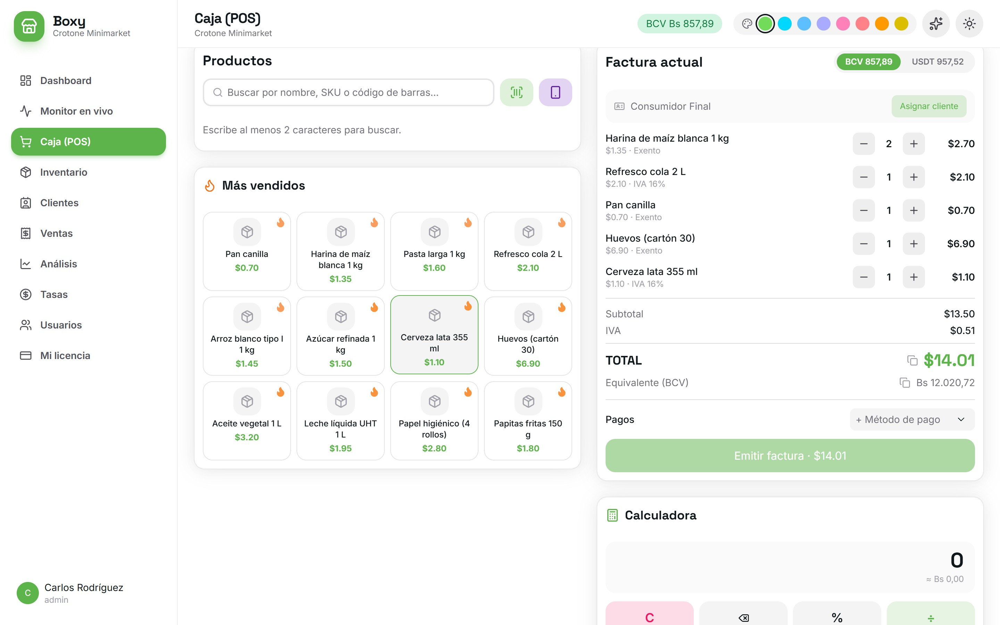
¿No tienes lector de barras? El cajero escanea el QR con su celular y cada código que lee cae directo en el carrito de la PC. Y para los productos que no traen código, Boxy te imprime la etiqueta.
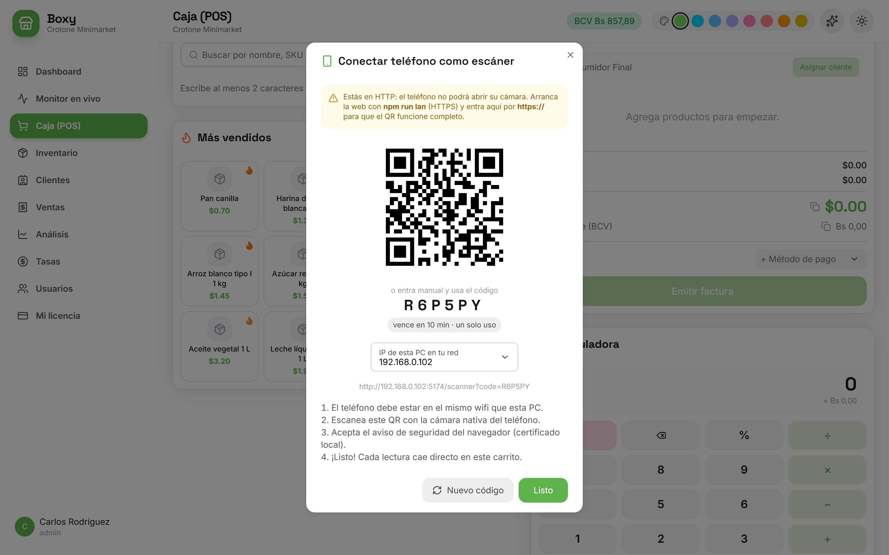
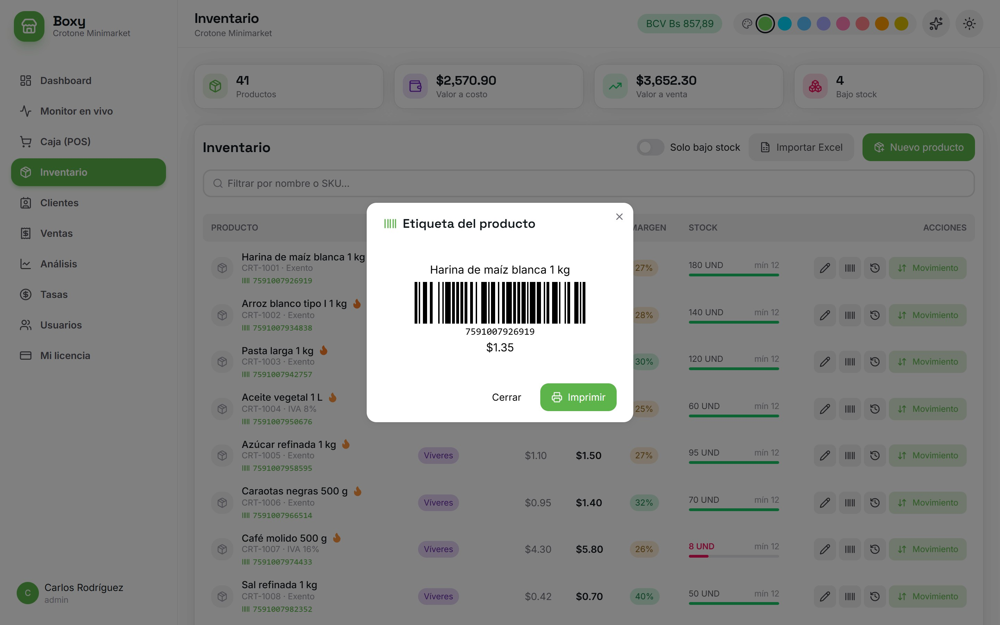
Lo primero que ves al entrar.
El sistema estudia tus ventas y te sugiere acciones concretas.
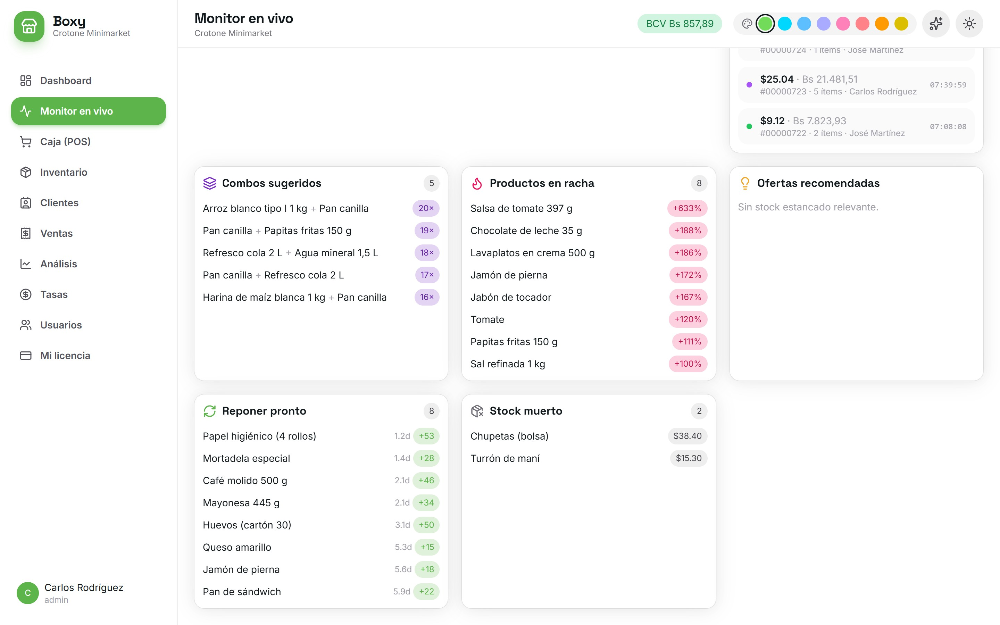
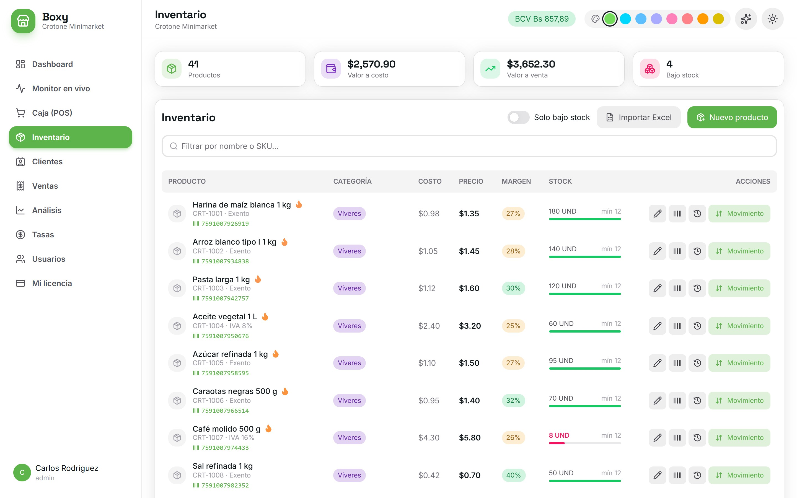
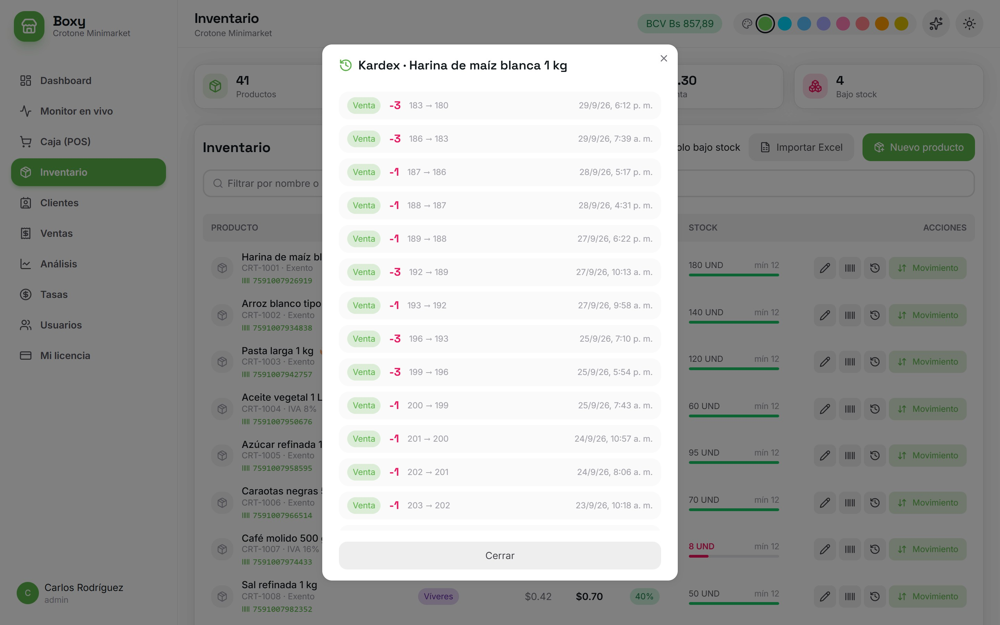
Un producto puede venderse mucho y dejar poco. Boxy te lo muestra claro.
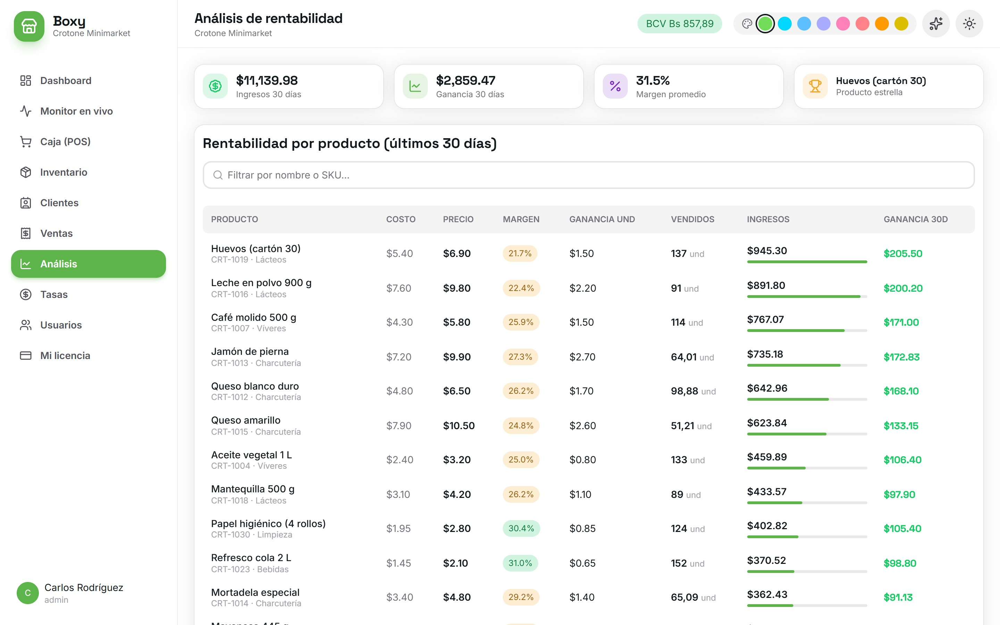
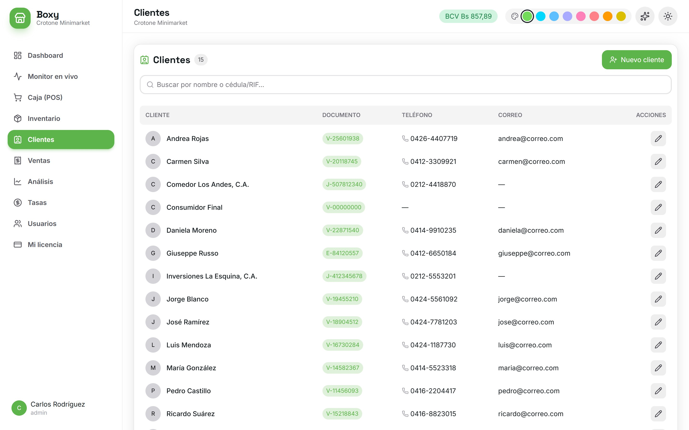
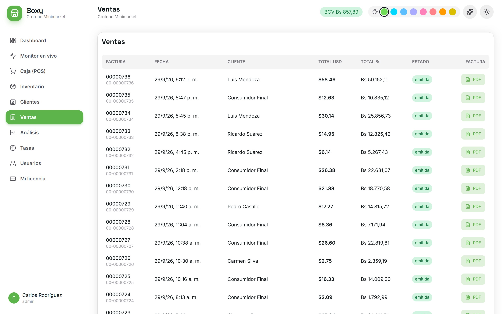
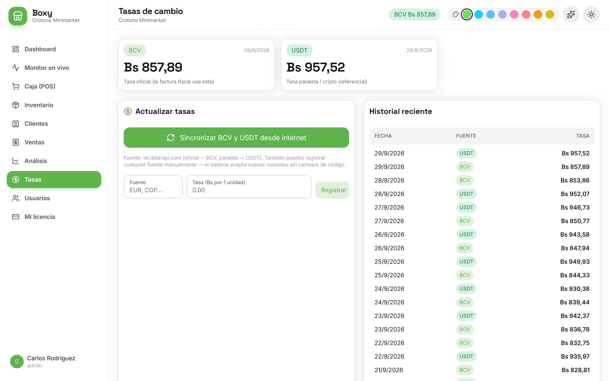
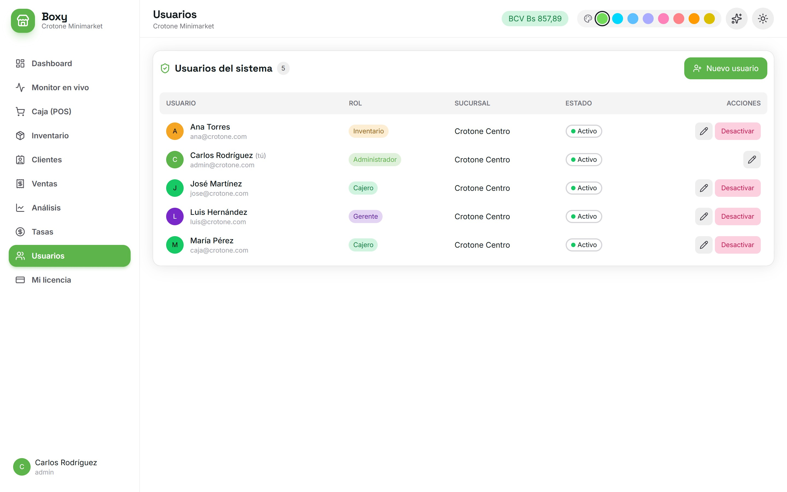
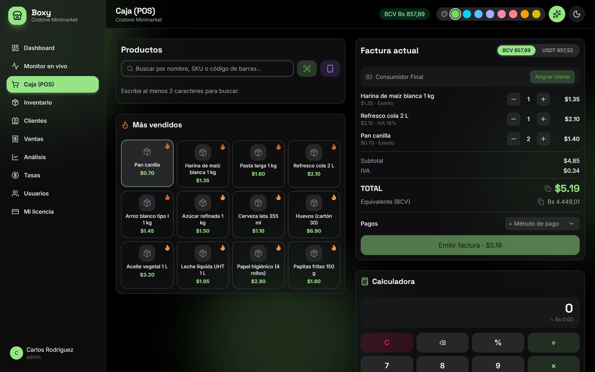
Cada producto lleva su alícuota: general 16 %, reducida 8 % o exento. El desglose sale solo en cada venta.
El 3 % sobre los pagos en divisas (efectivo en dólares, Zelle) se calcula y se suma sin que el cajero haga nada.
Todo se expresa también en bolívares a la tasa oficial del BCV del día, que queda guardada en cada venta.
Los comprobantes de Boxy son para el control interno del negocio. Los documentos con validez fiscal ante el SENIAT los emite la máquina fiscal homologada del comercio (o una imprenta digital autorizada, según el caso). La conexión de Boxy con la impresora fiscal se puede desarrollar como ampliación y se cotiza aparte.
Te mostramos Boxy funcionando con productos de tu propio negocio.
En la PC de tu tienda o en un servidor en internet para verlo desde cualquier lugar.
Importamos tus productos, precios, costos y stock desde Excel.
Tu equipo aprende a vender, cargar mercancía y leer los reportes.
Te acompañamos los primeros días de uso real en la tienda.
Laravel y MySQL en el servidor, React en la pantalla. Estable, rápido y fácil de mantener.
La información vive en tu propia base de datos, bajo tu control, y puedes respaldarla cuando quieras.
La estructura contempla varias sucursales y usuarios, para cuando el negocio crezca.
Agenda una demostración y mira Boxy funcionando con los productos de tu negocio.